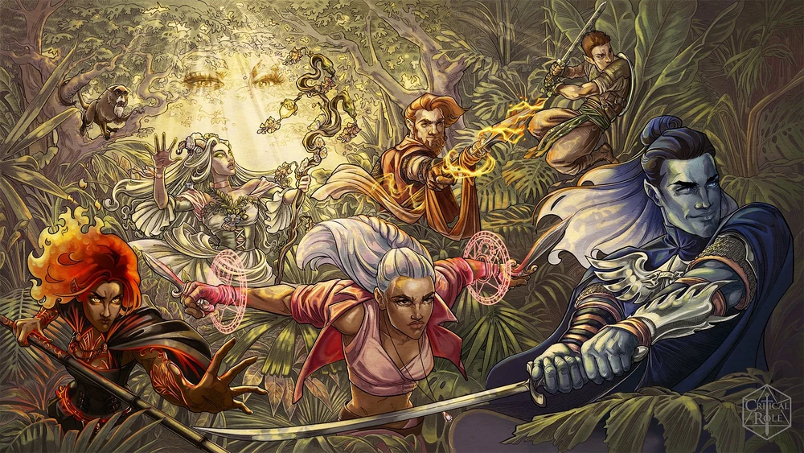
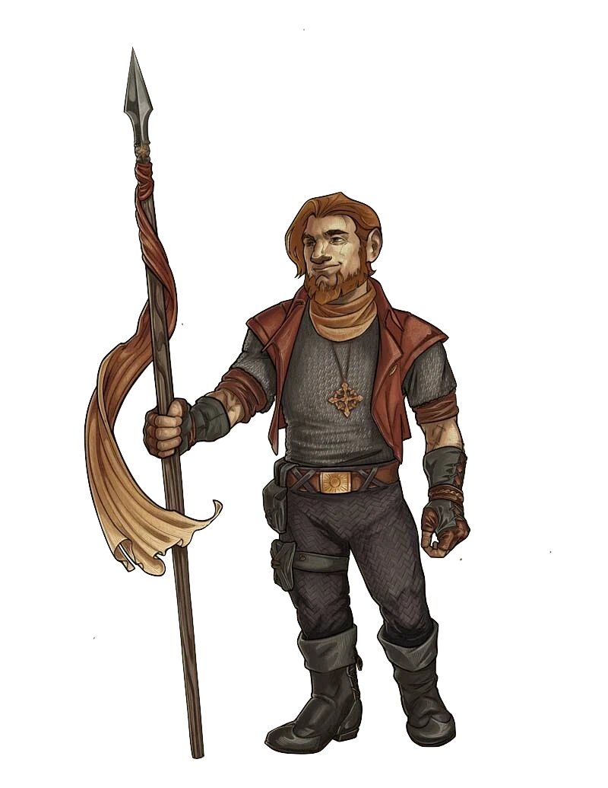
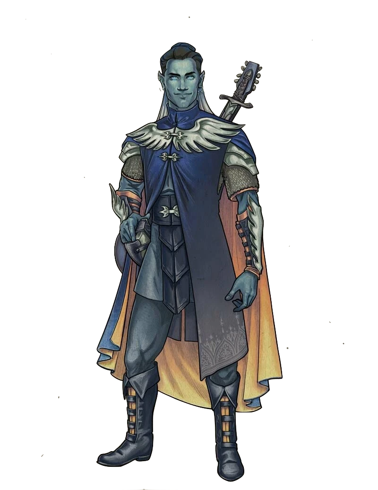
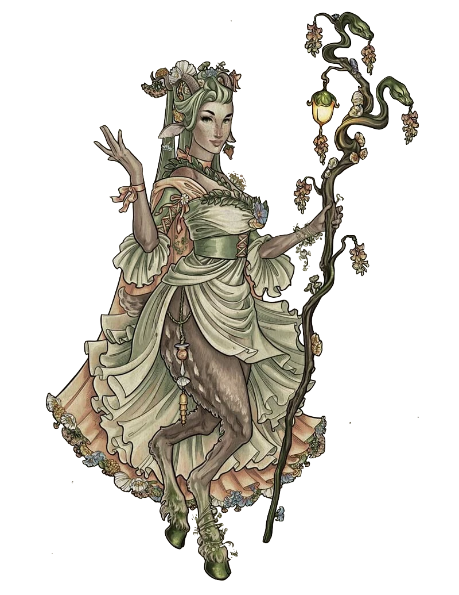
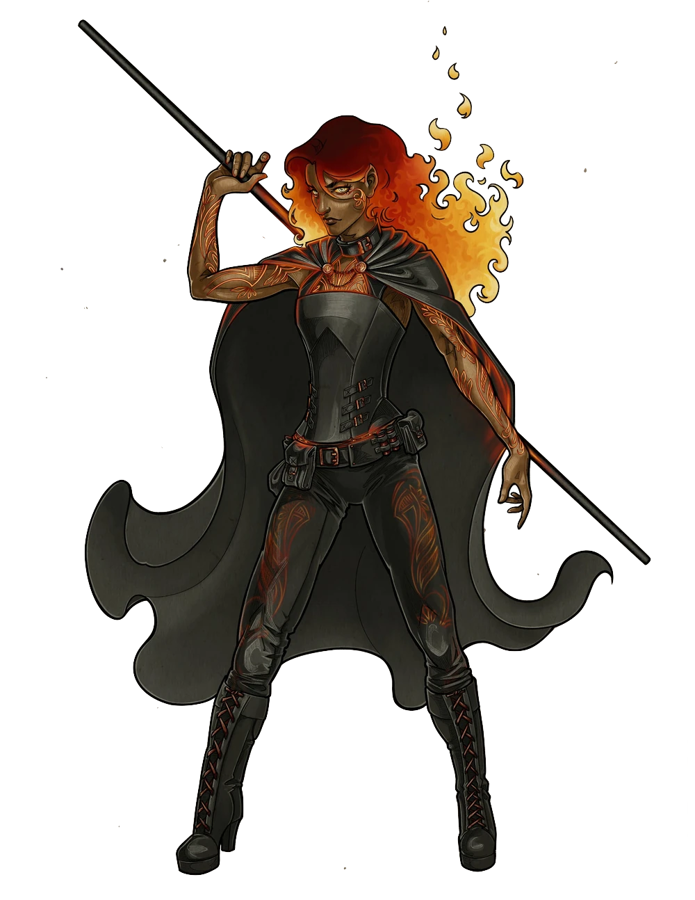
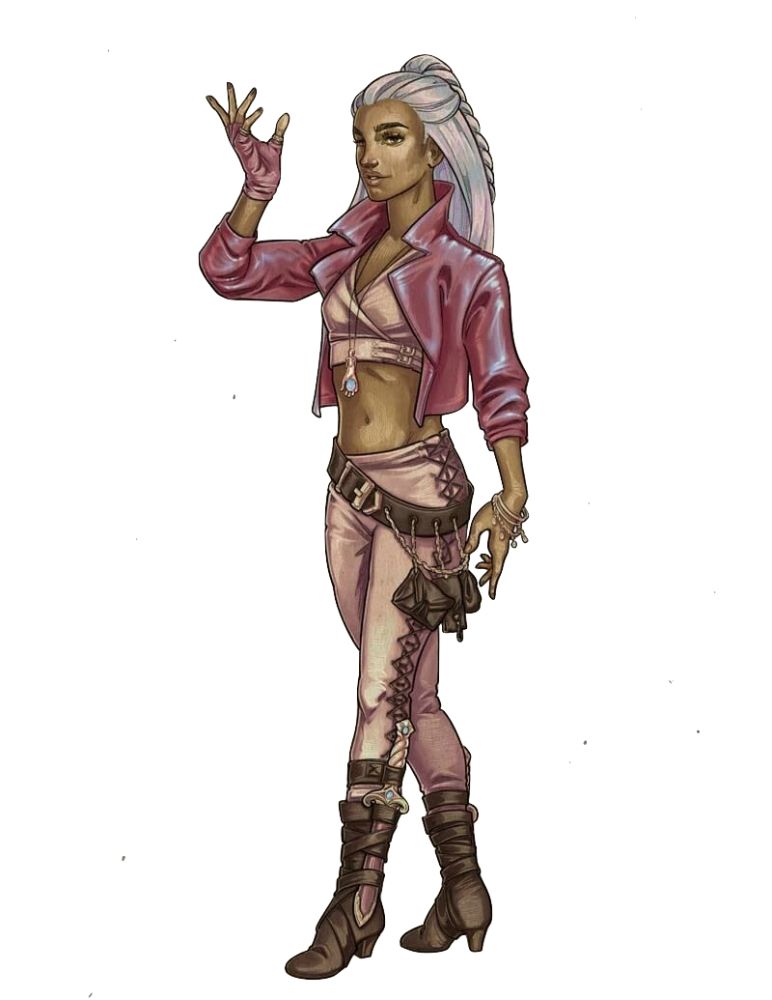
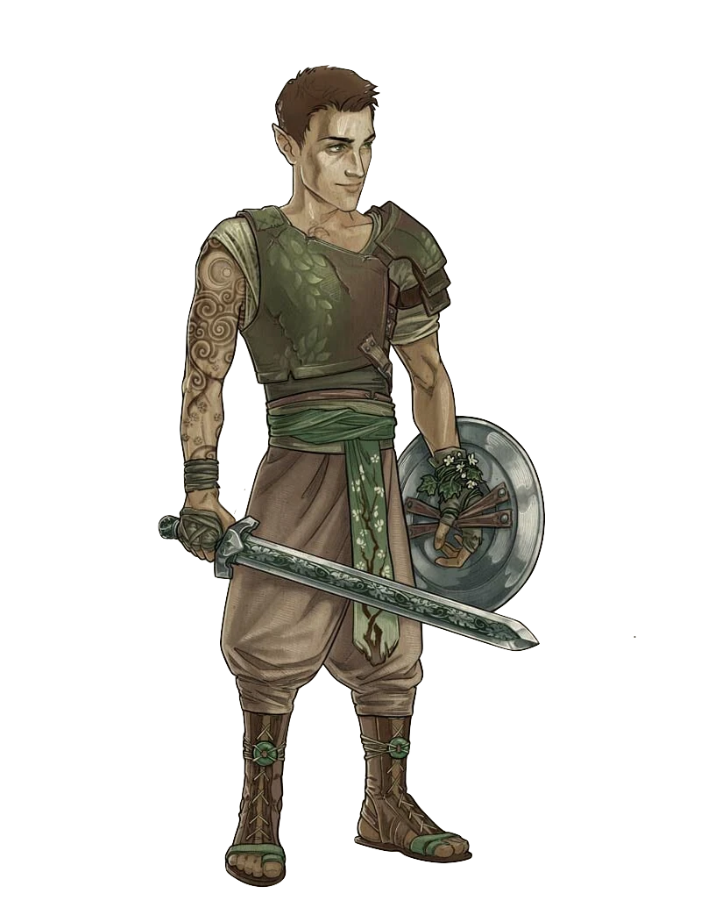

 Art By: @agarthanguide
In the wake of a harrowing encounter, the group finds themselves grappling with both internal and external challenges. As they navigate a city fraught with danger and intrigue, each member confronts their own fears and doubts. Dariax receives a mysterious boon from an enigmatic entity, while Fearne grapples with unsettling dreams and Orym questions his place among his newfound companions. Meanwhile, Dorian struggles to reconcile his actions during a perilous chase, haunted by the voice of a malevolent force.
Driven by a shared sense of purpose, the group embarks on a journey southward, guided by cryptic instructions and facing formidable adversaries along the way. As they unravel the secrets of ancient ruins and confront powerful adversaries, they discover new strengths within themselves and forge deeper bonds of friendship. Yet, their resolve is tested to its limits when they come face to face with a formidable foe intent on seizing control of their destiny.
In a climactic showdown, Opal is forced to confront a choice that could alter the course of her fate and that of her loved ones. With the support of her companions, she grapples with the darkness within and ultimately embraces a newfound power to protect those she holds dear. Through sacrifice and determination, the group emerges victorious, but not without scars both seen and unseen.
As they regroup and plan their next move, they are reminded that their journey is far from over. United by their shared experiences and the bonds forged in adversity, they embrace their roles as guardians of the crown, ready to face whatever challenges lie ahead. But as shadows loom on the horizon and new threats emerge, they must steel themselves for the trials yet to come, knowing that their greatest battles may still lie ahead.
The characters are:
Dariax Zaveon 
Dariax Zaveon, a dwarven sorcerer/bard and member of the Crown Keepers, grew up in Turst Fields alongside his older brother, Taros. While Taros followed the family farm path, Dariax was a troublemaker, often causing literal and figurative fires that Taros had to put out. Despite their differences, they maintained a decent relationship. Dariax has dabbled in thieves’ circles and once claimed a relationship with a burlesque dancer, Tharla Starr, though this was later revealed to be false. He also had a passionate but tumultuous relationship with Deni$e Bembachula, which ended when he left her to deal with the fallout of some shady business they were involved in. It was during this time, in 842 PD, that Dariax joined the Crown Keepers.
Dorian Storm 
Dorian Storm, originally born as Brontë Wyvernwind, is an air genasi bard and member of both the Crown Keepers and Bells Hells. Born into the wealthy and prominent Wyvernwind family, Dorian lived a sheltered life among the tents of the Silken Squall. Despite his privileged upbringing, he felt constrained by his family’s expectations, particularly their use of Zone of Truth to extract confessions from him when caught lying. Around 842 PD, Dorian left home, adopting the name Dorian Storm and embarking on travels that took him to Marquet and Emon, where he pursued music gigs.
Fearne Calloway 
Fearne Calloway, a faun druid/rogue, was born in the Verdant Expanse of Tal’Dorei under a rare occurrence of the red moon Ruidus, which later began appearing in the Feywild due to her birth. Raised by her grandmother Morri Calloway after her parents, Birdie and Oleander, became outcasts, Fearne grew up surrounded by love and protection. Despite her parents’ absence, Fearne received letters and gifts from them, signed in their names, and formed deep bonds with fey animal friends like Sweet Pea, Bompers, Peepers, and Dr. Nesbitt. In adulthood, she ventured to the Prime Material Plane through a gate constructed by Vox Machina, aiming to explore the world and reunite with her long-lost parents, carrying a round green crystal lens entrusted to her by her grandmother.
Fy’ra Rai 
Fy’ra Rai, a fire genasi monk, hails from the Elemental Plane of Fire and was raised by strict parents alongside her twin sister, Fy’ra Kai. Despite their competitive relationship, Fy’ra Rai harbored guilt over an incident where her sister fell, leading to her own injury. Both siblings eventually left home separately, and Fy’ra Rai believed her sister had perished, blaming herself for not protecting her.
Opal 
Opal, a human warlock and member of the Crown Keepers, hailed from Byroden, born in 824 PD. Raised with her twin sister Ted by their father after their mother’s departure, Opal left home at 18, eventually arriving in Emon in 842 PD.
Orym 
Orym, an Air Ashari halfling fighter, was born in the community of Zephrah, where he grew up under the care of his mother and the guidance of a local family of half-elves, particularly bonding with their youngest son, Will. Trained in physical prowess and basic healing magic, Orym became skilled as a guard in Zephrah alongside Will, eventually falling in love and marrying him. However, tragedy struck when an attack on Keyleth resulted in the deaths of Will and their father figure, Derrig, leaving Orym devastated. Unable to resurrect the fallen due to a toxin on the attackers’ weapons, Orym left Zephrah at Keyleth’s urging to embark on a journey to seek justice for his loved ones.
# Round 1
add_damage('Opal', 'Lightning', 11)
# Witchbolt
increment_kills('Opal')
# Assassin
add_damage('Orym', 'Piercing', 7)
add_enemy_damage('Assassin', 'Piercing', 10)
update_damage_taken('Opal', 10)
add_enemy_damage('Assassin', 'Slashing', 2)
update_damage_taken('Dorian', 2)
# Round 2
update_healing('Dorian', 5)
# Cure Wounds on Opal
add_damage('Fearne', 'Fire', 14)
# Burning Hands
add_damage('Dorian', 'Slashing', 5)
add_enemy_damage('Assassin', 'Piercing', 5)
update_damage_taken('Dariax', 5)
# Round 3
add_damage('Orym', 'Slashing', 8)
add_damage('Opal', 'Piercing', 5)
increment_kills('Opal')
# Assassin
increment_kills('Opal')
# Assassin
update_healing('Opal', 5)
# Hexblade's Curse
add_damage('Dariax', 'Radiant', 8)
# Sacred Flame
increment_kills('Dariax')
# Assassin# Round 1
add_enemy_damage('Guard', 'Bludgeoning', 2)
update_damage_taken('Dorian', 2)
add_damage('Orym', 'Bludgeoning', 9)
# Round 2
add_damage('Dorian', 'Psychic', 6)
# Dissonant Whispers
add_damage('Dariax', 'Piercing', 9)
increment_kills('Dariax')
# Guard
add_damage('Opal', 'Force', 15)
# Eldritch Blast# Round 1
add_damage('Opal', 'Piercing', 7)
add_damage('Fearne', 'Piercing', 14)
# Wild Shape ~ Dire Wolf
# Round 2
add_damage('Opal', 'Piercing', 13)
add_damage('Dorian', 'Psychic', 8)
# Dissonant Whispers
add_damage('Orym', 'Slashing', 7)
update_damage_taken('Dariax', 7)# Round 1
add_damage('Dorian', 'Slashing', 8)
add_enemy_damage('Scorpion', 'Piercing', 9)
update_damage_taken('Dariax', 4)
update_damage_taken('Dorian', 5)
add_damage("Fy'ra", 'Bludgeoning', 15)
# Round 2
add_damage('Orym', 'Slashing', 6)
increment_kills('Orym')
# Scorpion
add_damage('Fearne', 'Acid', 10)
# Primal Savagery
add_enemy_damage('Dark Fearne', 'Fire', 1)
update_damage_taken('Fearne', 1)
add_damage("Fy'ra", 'Bludgeoning', 13)
add_enemy_damage('Dark Fearne', 'Fire', 21)
# Burning Hands
update_damage_taken('Orym', 7)
update_damage_taken('Fearne', 7)
update_damage_taken("Fy'ra", 7)
add_enemy_damage('Dark Fearne', 'Fire', 10)
# Dark Mister's Flame Seed
add_damage('Opal', 'Piercing', 5)
add_damage('Dorian', 'Thunder', 14)
# Thunderwave
update_healing('Dorian', 11)
# Cure Wounds on Mister
add_enemy_damage('Scoprion', 'Piercing', 11)
update_damage_taken('Opal', 3)
update_damage_taken('Dorian', 3)
# Round 3
add_damage('Orym', 'Slashing', 24)
add_enemy_damage('Dark Fearne', 'Fire', 7)
# Hellish Rebuke
update_damage_taken('Orym', 7)
add_damage('Fearne', 'Fire', 3)
# Mister's Flame Seed
add_damage("Fy'ra", 'Bludgeoning', 5)
increment_kills("Fy'ra")
# Dark Fearne
add_damage('Opal', 'Piercing', 6)
add_damage('Dorian', 'Slashing', 6)
add_damage('Dariax', 'Fire', 28)
# Burning Hands
increment_kills('Dariax')
# Scorpion
increment_kills('Dariax')
# Scorpion
add_enemy_damage('Scorpion', 'Piercing', 21)
update_damage_taken("Fy'ra", 4)
update_damage_taken('Opal', 17)
update_times_knocked_unconscious('Opal')
# Knocked unconscious from the Scorpion's attacks
increment_kills('Dariax')
# Big Mister
update_healing('Fearne', 12)
# Cure Wounds on Opal bringing her back to consciousness # Round 1
add_damage("Fy'ra", 'Bludgeoning', 5)
add_damage('Opal', 'Force', 13)
# Eldritch Blast
add_enemy_damage('Fey Croc', 'Piercing', 3)
update_damage_taken("Fy'ra", 3)
add_damage('Dorian', 'Slashing', 3)
add_damage('Orym', 'Slashing', 7)
add_damage('Dariax', 'Fire', 19)
# Burning Hands
# Round 2
add_damage("Fy'ra", 'Bludgeoning', 23)
update_healing('Dorian', 6)
# Cure Wounds on Fy'ra # Surprise Round
update_damage_taken('Fearne', 7)
add_damage("Fy'ra", "Bludgeoning", 9)
# Round 1
add_damage('Dorian', 'Piercing', 7)
add_damage('Orym', 'Slashing', 6)
add_damage('Opal', 'Radiant', 5)
# Word of Radiance
# Round 2
add_damage('Dorian', 'Thunder', 12)
# Thunderwave
add_enemy_damage('Statue', 'Piercing', 16)
update_damage_taken('Dorian', 16)
add_enemy_damage('Mage', 'Necrotic', 11)
# Inflict Wounds
update_damage_taken('Orym', 11)
add_damage('Orym', 'Slashing', 12)
# Round 3
add_damage('Fearne', 'Piercing', 10)
# Wild Shape ~ Dire wolf
increment_kills('Fearne')
# Mage
add_damage("Fy'ra", 'Bludgeoning', 19)
add_enemy_damage('Statue', 'Piercing', 16)
update_damage_taken("Fy'ra", 7)
update_damage_taken('Orym', 9)
update_healing('Orym', 12)
# Second Wind
add_damage('Orym', 'Slashing', 12)
increment_kills('Orym')
# Statue
update_healing('Dariax', 14)
# Cure Wounds on Dorian
add_damage('Dariax', 'Radiant', 8)
# Sacred Flame
# Round 4
add_damage('Dorian', 'Psychic', 13)
# Dissonant Whispers
add_damage("Fy'ra", 'Fire', 13)
# Burning Hands
add_damage("Fy'ra", 'Bludgeoning', 5)
add_damage('Fearne', 'Piercing', 12)
# Wild Shape ~ Dire Wolf# Round 1
update_damage_taken('Orym', 2)
add_enemy_damage('Construct', 'Bludgeoning', 10)
update_damage_taken('Dariax', 4)
update_damage_taken('Orym', 6)
update_damage_taken('Opal', 2)
add_damage('Fearne', 'Fire', 17)
# Flame Sword
# Round 2
add_damage('Orym', 'Slashing', 34)
update_damage_taken('Orym', 2)
add_damage('Dariax', 'Piercing', 14)
add_enemy_damage('Construct', 'Bludgeoning', 7)
update_damage_taken('Opal', 7)
add_damage('Dorian', 'Slashing', 6)
add_damage('Opal', 'Force', 4)
# Eldritch Blast
update_healing('Opal', 5)
# Heals Orym from ??
add_enemy_damage('Construct', 'Bludgeoning', 6)
update_damage_taken('Dorian', 3)
update_damage_taken('Opal', 3)
add_damage('Fearne', 'Fire', 14)
# Flame Blade
# Round 3
add_damage('Orym', 'Slashing', 10)
add_damage('Dariax', 'Fire', 30)
# Burning Hands
increment_kills('Dariax')
# Construct
add_damage('Opal', 'Piercing', 15)
add_damage('Fearne', 'Fire', 14)
# Flame Sword
add_enemy_damage('Construct', 'Bludgeoning', 5)
update_healing('Dariax', 5)
# Cure Wounds on Fearne
add_damage('Dariax', 'Piercing', 44)
increment_kills('Dariax')
# Construct
add_damage('Dorian', 'Slashing', 6)
add_damage('Dorian', 'Thunder', 13)
# Shatter
increment_kills('Dorian')
# Construct# Round 1
add_enemy_damage('Construct', 'Bludgeoning', 5)
update_damage_taken('Dariax', 5)
add_damage('Dorian', 'Thunder', 10)
# Thunderwave
add_damage('Orym', 'Slashing', 5)
add_damage('Fearne', 'Fire', 5)
# Mister's Flame Seed
add_damage('Fearne', 'Slashing', 4)
# Round 2
increment_kills('Dorian')
# Construct
add_enemy_damage("My'ratta", 'Force', 12)
# Eldritch Blast 2/2
update_damage_taken('Dorian', 5)
update_damage_taken('Dariax', 7)
add_damage('Orym', 'Slashing', 14)
add_enemy_damage('Guard', 'Slashing', 7)
update_damage_taken('Orym', 7)
add_damage('Fearne', 'Piercing', 11)
# Wild Shape ~ Dire Wolf
add_damage('Fearne', 'Fire', 7)
# Mister's Flame Seed
add_enemy_damage('Guard', '', 4)
update_damage_taken('Fearne', 4)
add_enemy_damage("My'ratta", 'Force', 8)
# Eldritch Blast
update_damage_taken('Fearne', 8)
# Round 3
update_healing('Dariax', 8)
# Cure Wounds on himself
update_damage_taken('Dorian', 2)
update_damage_taken('Opal', 1)
update_healing('Dorian', 4)
# Regular Healing Potion on himself
add_enemy_damage("My'ratta", 'Force', 9)
# Eldritch Blast 1/2
update_damage_taken('Dorian', 9)
update_times_knocked_unconscious('Dorian')
# Knocked unconscious by My'ratta's Eldritch Blast
add_damage('Orym', 'Slashing', 8)
add_damage('Orym', 'Piercing', 28)
increment_kills('Orym')
# Guard
add_damage('Fearne', 'Piercing', 8)
# Wild Shape ~ Dire Wolf
add_damage('Fearne', 'Fire', 8)
# Mister's Flame Seed
add_enemy_damage('Guard', 'Cold', 28)
# Cone of Cold
update_damage_taken('Fearne', 7)
update_damage_taken('Dariax', 7)
# Dorian auto-fails two death saving throws from the Cone of Cold
increment_kills('Fearne')
# Guard
update_damage_taken('Opal', 1)
# Round 4
update_healing('Dariax', 5)
# Cure Wound on Dorian bringing him back to consciousness
add_damage('Dariax', 'Piercing', 28)
add_enemy_damage('Ted', 'Poison', 36)
# Poison Cloud
update_damage_taken('Opal', 9)
update_damage_taken('Fearne', 9)
update_healing('Dorian', 3)
# Cure Wounds on himself
add_damage('Orym', 'Piercing', 12)
update_healing('Orym', 5)
# Second Wind
add_enemy_damage("My'ratta", 'Necrotic', 10)
# Inflict Wounds
update_damage_taken('Dariax', 10)
update_times_knocked_unconscious('Dariax')
# Knocked unconscious by My'ratta's Inflict Wounds
# Round 5
# Dariax fails a death saving throw
update_healing('Dorian', 16)
# Cure Wounds on Dariax bringing him back to consciousness
add_damage('Dorian', 'Bludgeoning', 3)
add_damage('Opal', 'Slashing', 5)
increment_kills('Opal')
# My'ratta
update_healing('Fearne', 8)
# Cure Wounds on Mister# Checking the Blightstar
add_damage('Orym', 'Slashing', 9)
# Doors...
add_damage('Orym', 'Slashing', 9)
update_damage_taken('Fearne', 1)
add_damage('Opal', 'Force', 9)
# Eldritch Blast
# Fearne falls while climbing the cliff
update_damage_taken('Fearne', 6)
# A dart hits Fearne
update_damage_taken('Fearne', 1)
# A Horse runs over Fearne
update_damage_taken('Fearne', 2)
# Dorian feels the after effects of the Circlet
update_damage_taken('Dorian', 3)
# Fy'ra's mission
update_damage_taken("Fy'ra", 1)
# Dariax does something stupid
update_damage_taken('Dariax', 2)Damage:
Radiant: 36
Piercing: 95
Fire: 77
Total Damage Done:
208
Healing: 32
Damage Taken: 51
Times Knocked Unconscious:
1
Times Killed: 0
Amount of kills: 7
Damage:
Slashing: 34
Psychic: 27
Thunder: 49
Piercing: 7
Bludgeoning: 3
Total Damage Done: 120
Healing: 45
Damage
Taken: 50
Times Knocked Unconscious: 1
Times Killed: 0
Amount of kills: 2
Damage:
Fire: 82
Piercing: 55
Acid: 10
Slashing: 4
Total
Damage Done: 151
Healing: 20
Damage Taken: 53
Times Knocked
Unconscious: 0
Times Killed: 0
Amount of kills: 2
Damage:
Bludgeoning: 94
Fire: 13
Total Damage Done: 107
Healing:
0
Damage Taken: 22
Times Knocked Unconscious: 0
Times
Killed: 0
Amount of kills: 1
Damage:
Lightning: 11
Piercing: 51
Force: 41
Radiant: 5
Slashing: 5
Total Damage Done: 113
Healing: 10
Damage Taken:
53
Times Knocked Unconscious: 1
Times Killed: 0
Amount of
kills: 4
Damage:
Piercing: 47
Slashing: 171
Bludgeoning: 9
Total Damage
Done: 227
Healing: 17
Damage Taken: 51
Times Knocked
Unconscious: 0
Times Killed: 0
Amount of kills: 3
* Note, the damage totals are not 100% accurate, this could be from players not saying what damage type the attack did or separating damage types (such as Hex damage)
* The character artwork was made by: @agarthanguide